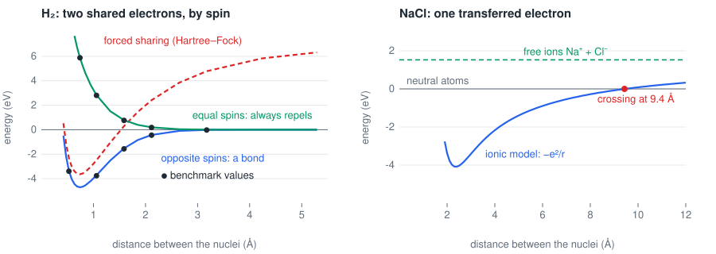
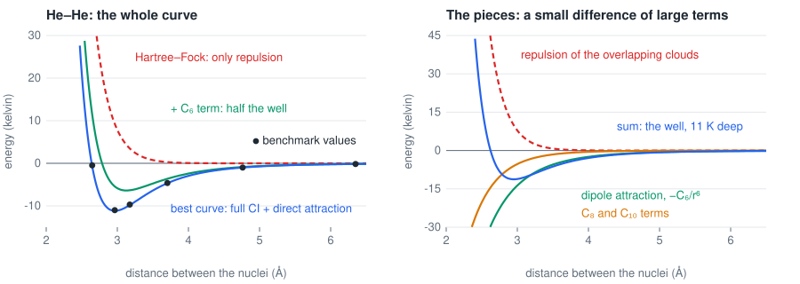

Atom and molecule analyzer
Each formula's derivation is proved in Lean where a theorem is named; the comparison with reference data is what tests the model. Rows marked limit are cases where the model is known to be outside its domain, kept to show where it breaks. The last column gives the error as a multiple of the reference value's own uncertainty.
Best model for each quantity
One line per quantity, showing only the best model in this analyzer. The sections below list every model tried, including the simple ones that fail.
| System | Quantity | Best model | Predicted | Reference | Error | Models tried |
|---|---|---|---|---|---|---|
| One-electron atoms | ||||||
| H | ionization energy | Dirac + leading QED (Lamb shift) | 13.59843 eV | 13.59843 eV | +0.00000 % | 3 |
| He+ | ionization energy | Dirac + leading QED (Lamb shift) | 54.41776 eV | 54.41777 eV | -0.00000 % | 3 |
| Li2+ | ionization energy | Dirac + leading QED (Lamb shift) | 122.4544 eV | 122.4544 eV | +0.00000 % | 3 |
| Be3+ | ionization energy | Dirac + leading QED (Lamb shift) | 217.7186 eV | 217.7186 eV | -0.00001 % | 3 |
| B4+ | ionization energy | Dirac + leading QED (Lamb shift) | 340.2259 eV | 340.226 eV | -0.00002 % | 3 |
| C5+ | ionization energy | Dirac + leading QED (Lamb shift) | 489.993 eV | 489.9932 eV | -0.00005 % | 3 |
| H, n=3→2 | Balmer wavelength (air) | Dirac levels (fine structure, averaged) | 656.2794 nm | 656.279 nm | +0.00005 % | 2 |
| H, n=4→2 | Balmer wavelength (air) | Dirac levels (fine structure, averaged) | 486.132 nm | 486.135 nm | -0.00061 % | 2 |
| H, n=5→2 | Balmer wavelength (air) | Dirac levels (fine structure, averaged) | 434.046 nm | 434.047 nm | -0.00023 % | 2 |
| H, n=6→2 | Balmer wavelength (air) | Dirac levels (fine structure, averaged) | 410.1732 nm | 410.174 nm | -0.00019 % | 2 |
| Atoms with several electrons: simple models | ||||||
| He | total ground-state energy | Hylleraas (r₁₂ in the wavefunction) | -79.00353 eV | -79.00515 eV | -0.0021 % | 5 |
| Li | first ionization energy | full CI with s, p and d orbitals | 5.386867 eV | 5.391715 eV | -0.0899 % | 5 |
| Rotating molecules | ||||||
| D2 from H2 | rotational constant B | isotope rule, B ∝ 1/μ at fixed bond length | 30.44989 cm⁻¹ | 30.4436 cm⁻¹ | +0.0207 % | 1 |
| HD from H2 | rotational constant B | isotope rule, B ∝ 1/μ at fixed bond length | 45.65144 cm⁻¹ | 45.655 cm⁻¹ | -0.0078 % | 1 |
| D35Cl from H35Cl | rotational constant B | isotope rule, B ∝ 1/μ at fixed bond length | 5.449041 cm⁻¹ | 5.448794 cm⁻¹ | +0.0045 % | 1 |
| H2 | rotational constant B | rigid rotor, I = μr² | 60.85403 cm⁻¹ | 60.853 cm⁻¹ | +0.0017 % | 1 |
| N2 | rotational constant B | rigid rotor, I = μr² | 1.998258 cm⁻¹ | 1.99824 cm⁻¹ | +0.00091 % | 1 |
| O2 | rotational constant B | rigid rotor, I = μr² | 1.445626 cm⁻¹ | 1.44563 cm⁻¹ | -0.00029 % | 1 |
| 12C16O | rotational constant B | rigid rotor, I = μr² | 1.931292 cm⁻¹ | 1.93128 cm⁻¹ | +0.00061 % | 1 |
| H35Cl | rotational constant B | rigid rotor, I = μr² | 10.59345 cm⁻¹ | 10.59341 cm⁻¹ | +0.00034 % | 1 |
| 12C16O | J=0→1 line frequency | vibrating, stretching rotor: 2B₀ − 4D | 115.2711 GHz | 115.271 GHz | +0.00012 % | 2 |
| Heat capacity and sound | ||||||
| He | C_p at 298 K | equipartition, f = 3 (translation only) | 20.78616 J/(mol·K) | 20.786 J/(mol·K) | +0.00075 % | 1 |
| Ar | C_p at 298 K | equipartition, f = 3 (translation only) | 20.78616 J/(mol·K) | 20.786 J/(mol·K) | +0.00075 % | 1 |
| H2 | C_p at 298 K | quantised rotation + centrifugal stretching | 28.83953 J/(mol·K) | 28.836 J/(mol·K) | +0.0122 % | 3 |
| N2 | C_p at 298 K | equipartition + quantised vibration | 29.1129 J/(mol·K) | 29.124 J/(mol·K) | -0.0381 % | 2 |
| O2 | C_p at 298 K | equipartition + quantised vibration | 29.33671 J/(mol·K) | 29.378 J/(mol·K) | -0.14 % | 2 |
| CO | C_p at 298 K | equipartition + quantised vibration | 29.12647 J/(mol·K) | 29.142 J/(mol·K) | -0.0533 % | 2 |
| Cl2 | C_p at 298 K | equipartition + quantised vibration | 33.78028 J/(mol·K) | 33.95 J/(mol·K) | -0.50 % | 2 |
| CO2 | C_p at 298 K | equipartition + quantised vibration | 37.14704 J/(mol·K) | 37.13 J/(mol·K) | +0.0459 % | 2 |
| air | speed of sound at 20 °C | √(γRT/M), γ = 7/5 | 343.235 m/s | 343.2 m/s | +0.0102 % | 1 |
| He | speed of sound at 20 °C | ideal gas + acoustic virial coefficient | 1007.891 m/s | 1007.89 m/s | +0.00007 % | 2 |
| Numerical quantum mechanics | ||||||
| Be | first ionization energy | full CI, all four electrons, s, p, d and f (1 071 225 determinants) | 9.308583 eV | 9.322699 eV | -0.15 % | 5 |
| H⁻ | electron affinity of H | Hylleraas (r₁₂ in the wavefunction) | 0.7547067 eV | 0.754195 eV | +0.0678 % | 3 |
| H₂ | bond length | full CI, potential-curve minimum | 0.7410006 Å | 0.74144 Å | -0.0593 % | 1 |
| H₂ | binding energy D_e | full CI, 2·E(H) − E(H₂) | 4.695284 eV | 4.7483 eV | -1.12 % | 1 |
| H₂ | vibration wavenumber ω_e | curvature of the computed potential | 4403.17 cm⁻¹ | 4401.21 cm⁻¹ | +0.0445 % | 1 |
| H₂ | rotational constant B | rigid rotor at the computed bond length | 60.92623 cm⁻¹ | 60.853 cm⁻¹ | +0.12 % | 1 |
| Validation of the numerical methods | ||||||
| He, Hartree–Fock | total energy | this code vs. published benchmark | -2.861678 hartree | -2.86168 hartree | -0.00007 % | 1 |
| Li⁺, Hartree–Fock | total energy | this code vs. published benchmark | -7.236412 hartree | -7.236415 hartree | -0.00004 % | 1 |
| Be, Hartree–Fock | total energy | this code vs. published benchmark | -14.57302 hartree | -14.57302 hartree | -0.00003 % | 1 |
| He, Hylleraas | total energy | this code vs. published benchmark | -2.903724 hartree | -2.903724 hartree | -0.00001 % | 1 |
| H⁻, Hartree–Fock | total energy | this code vs. published benchmark | -0.4879296 hartree | -0.48793 hartree | -0.00008 % | 1 |
| H⁻, Hylleraas | total energy | this code vs. published benchmark | -0.5277501 hartree | -0.527751 hartree | -0.00018 % | 1 |
| H₂, full CI at minimum | total energy | this code vs. published benchmark | -1.172484 hartree | -1.174476 hartree | -0.17 % | 1 |
| Chemical bonds: shared electrons (H₂) and transferred electrons (NaCl) | ||||||
| NaCl | binding energy D_e | + polarization of the ions | 4.087042 eV | 4.252608 eV | -3.89 % | 6 |
| NaCl | electric dipole moment | Hartree–Fock, at the measured bond length | 9.465975 D | 8.971 D | +5.52 % | 4 |
| NaCl | bond length | Hartree–Fock, all 28 electrons, nothing measured | 2.39906 Å | 2.3608 Å | +1.62 % | 1 |
| NaCl | vibration wavenumber ω_e | Hartree–Fock, all 28 electrons, nothing measured | 352.9541 cm⁻¹ | 364.684 cm⁻¹ | -3.22 % | 1 |
| NaCl | energy to separate into ions Na⁺ + Cl⁻ | Hartree–Fock, all 28 electrons, nothing measured | 5.53774 eV | 5.778959 eV | -4.17 % | 1 |
| Na | first ionization energy | Hartree–Fock, E(Na⁺) − E(Na) | 4.953699 eV | 5.139077 eV | -3.61 % | 1 |
| Cl | electron affinity | outer electrons by full CI, inner ten frozen (15 orbitals) no model here matches | 3.159106 eV | 3.612725 eV | -13 % | 2 |
| Validation of the numerical methods | ||||||
| NaCl | bond length (Hartree–Fock) | this code vs. large-basis Hartree–Fock | 2.39906 Å | 2.3958 Å | +0.14 % | 1 |
| NaCl | vibration wavenumber (Hartree–Fock) | this code vs. large-basis Hartree–Fock | 352.9541 cm⁻¹ | 356 cm⁻¹ | -0.86 % | 1 |
| NaCl | dipole moment (Hartree–Fock) | this code vs. large-basis Hartree–Fock | 9.633569 D | 9.456 D | +1.88 % | 1 |
| NaCl | total energy (Hartree–Fock) | this code vs. large-basis Hartree–Fock | -621.4328 Eh | -621.4589 Eh | -0.0042 % | 1 |
| Chemical bonds: shared electrons (H₂) and transferred electrons (NaCl) | ||||||
| H₂ at 0.53 Å | energy below two free atoms | full CI | 3.334935 eV | 3.388898 eV | -1.59 % | 1 |
| H₂ at 1.06 Å | energy below two free atoms | full CI | 3.709666 eV | 3.758789 eV | -1.31 % | 1 |
| H₂ at 1.59 Å | energy below two free atoms | full CI | 1.52114 eV | 1.559927 eV | -2.49 % | 1 |
| H₂ at 2.12 Å | energy below two free atoms | full CI | 0.4266712 eV | 0.4460015 eV | -4.33 % | 1 |
| H₂ at 3.18 Å | energy below two free atoms | full CI no model here matches | 0.01998315 eV | 0.02274077 eV | -12 % | 2 |
| H₂, equal spins, at 0.74 Å | energy above two free atoms | full CI, antisymmetric pair function | 5.895022 eV | 5.873575 eV | +0.37 % | 1 |
| H₂, equal spins, at 1.06 Å | energy above two free atoms | full CI, antisymmetric pair function | 2.829369 eV | 2.801042 eV | +1.01 % | 1 |
| H₂, equal spins, at 1.59 Å | energy above two free atoms | full CI, antisymmetric pair function | 0.7828136 eV | 0.7616358 eV | +2.78 % | 1 |
| H₂, equal spins, at 2.12 Å | energy above two free atoms | full CI, antisymmetric pair function no model here matches | 0.1935267 eV | 0.1801911 eV | +7.40 % | 1 |
| Magnetism: the electron cloud as a tiny superconductor | ||||||
| H | field shielded at the nucleus | Lamb formula, α²/3 | 17.75045 ppm | 17.7354 ppm | +0.0849 % | 1 |
| He | field shielded at the nucleus | Hylleraas wavefunction, Σ⟨1/r⟩ | 59.93675 ppm | 59.96651 ppm | -0.0496 % | 3 |
| He | diamagnetic susceptibility | Hylleraas vs. best published calculation | -1.891034 10⁻⁶ cm³/mol | -1.891035 10⁻⁶ cm³/mol | -0.00003 % | 4 |
| Forces between neutral atoms: two helium atoms | ||||||
| He | polarizability | full CI, sum over all excited states | 1.384405 a₀³ | 1.383762 a₀³ | +0.0465 % | 2 |
| He | quadrupole polarizability | full CI, sum over all excited states | 2.45145 a₀⁵ | 2.445083 a₀⁵ | +0.26 % | 1 |
| He | octupole polarizability | full CI, sum over all excited states | 10.65436 a₀⁷ | 10.62033 a₀⁷ | +0.32 % | 1 |
| He–He | van der Waals coefficient C₆ | Casimir–Polder sum over all excited states | 1.462591 a.u. | 1.460978 a.u. | +0.11 % | 2 |
| He–He | van der Waals coefficient C₈ | Casimir–Polder sum, dipole with quadrupole | 14.16045 a.u. | 14.11786 a.u. | +0.30 % | 1 |
| He–He | van der Waals coefficient C₁₀ | Casimir–Polder sum, dipole with octupole and quadrupole with quadrupole | 184.3288 a.u. | 183.6911 a.u. | +0.35 % | 1 |
| He–He at 2.12 Å | Hartree–Fock repulsion | Hartree–Fock for the pair, s and p functions | 1359.879 μEh | 1357.88 μEh | +0.15 % | 1 |
| He–He at 2.96 Å | Hartree–Fock repulsion | Hartree–Fock for the pair, s and p functions | 29.2461 μEh | 29.2 μEh | +0.16 % | 1 |
| He–He at 2.97 Å | interaction energy at the minimum | −C₆/r⁶ alone no model here matches | -14.84748 K | -10.996 K | +35 % | 2 |
| He–He | well depth | full-CI repulsion + directly computed attraction | 11.1547 K | 10.996 K | +1.44 % | 5 |
| He–He | position of the minimum | full-CI repulsion + directly computed attraction | 2.966673 Å | 2.967626 Å | -0.0321 % | 3 |
| He–He | distance where the energy is zero | full-CI repulsion + directly computed attraction | 2.639012 Å | 2.640859 Å | -0.0699 % | 2 |
| He–He at 1.59 Å | interaction energy | Hartree–Fock repulsion + damped C₆, C₈, C₁₀ terms | 3714.185 K | 3767.734 K | -1.42 % | 2 |
| He–He at 2.12 Å | interaction energy | full-CI repulsion + directly computed attraction | 292.0101 K | 292.582 K | -0.20 % | 3 |
| He–He at 3.18 Å | interaction energy | Hartree–Fock repulsion + damped C₆, C₈, C₁₀ terms | -9.722091 K | -9.68079 K | +0.43 % | 2 |
| He–He at 3.70 Å | interaction energy | Hartree–Fock repulsion + damped C₆, C₈, C₁₀ terms | -4.601852 K | -4.6226 K | -0.45 % | 2 |
| He–He at 4.76 Å | interaction energy | Hartree–Fock repulsion + damped C₆, C₈, C₁₀ terms | -0.9879564 K | -0.98971 K | -0.18 % | 2 |
| He–He at 6.35 Å | interaction energy | Hartree–Fock repulsion + damped C₆, C₈, C₁₀ terms | -0.1660115 K | -0.16592 K | +0.0551 % | 2 |
| He gas, 273.16 K | second virial coefficient | full-CI repulsion + directly computed attraction, with quantum correction | 11.89858 cm³/mol | 11.9257 cm³/mol | -0.23 % | 4 |
| He₂ molecule | binding energy | lowest level in the best curve no model here matches | 286.9401 neV | 151.9 neV | +89 % | 2 |
| He–He at 2.96 Å | interaction energy | four-electron full CI alone, s and p functions no model here matches | -4.610143 K | -11.00072 K | -58 % | 1 |
| He–He at 2.96 Å | attraction (dispersion energy) | computed directly with overlapping clouds, large basis | -22.34676 K | -22.395 K | -0.22 % | 2 |
Every model tried
The full list, section by section.
One-electron atoms
| System | Quantity | Model | Lean theorem | Predicted | Reference | Error | Verdict | Error ÷ uncertainty |
|---|---|---|---|---|---|---|---|---|
| H | ionization energy | Bohr levels, Z² scaling | bohr_orbit, hydrogenlike_energy | 13.59829 eV | 13.59843 eV | -0.0011 % | matches | 10 791× |
| H | ionization energy | relativistic (Dirac) ground state | dirac_binding_ge_bohr (inequality only) | 13.59847 eV | 13.59843 eV | +0.00025 % | matches | 2 522× |
| H | ionization energy | Dirac + leading QED (Lamb shift) | not formalised | 13.59843 eV | 13.59843 eV | +0.00000 % | matches | 37× |
| He+ | ionization energy | Bohr levels, Z² scaling | bohr_orbit, hydrogenlike_energy | 54.41531 eV | 54.41777 eV | -0.0045 % | matches | 45 068× |
| He+ | ionization energy | relativistic (Dirac) ground state | dirac_binding_ge_bohr (inequality only) | 54.41821 eV | 54.41777 eV | +0.00082 % | matches | 8 187× |
| He+ | ionization energy | Dirac + leading QED (Lamb shift) | not formalised | 54.41776 eV | 54.41777 eV | -0.00000 % | matches | 2.2× |
| Li2+ | ionization energy | Bohr levels, Z² scaling | bohr_orbit, hydrogenlike_energy | 122.4417 eV | 122.4544 eV | -0.0104 % | matches | 103 645× |
| Li2+ | ionization energy | relativistic (Dirac) ground state | dirac_binding_ge_bohr (inequality only) | 122.4563 eV | 122.4544 eV | +0.0016 % | matches | 16 186× |
| Li2+ | ionization energy | Dirac + leading QED (Lamb shift) | not formalised | 122.4544 eV | 122.4544 eV | +0.00000 % | matches | 10× |
| Be3+ | ionization energy | Bohr levels, Z² scaling | bohr_orbit, hydrogenlike_energy | 217.6778 eV | 217.7186 eV | -0.0187 % | matches | 187 157× |
| Be3+ | ionization energy | relativistic (Dirac) ground state | dirac_binding_ge_bohr (inequality only) | 217.7242 eV | 217.7186 eV | +0.0026 % | matches | 25 900× |
| Be3+ | ionization energy | Dirac + leading QED (Lamb shift) | not formalised | 217.7186 eV | 217.7186 eV | -0.00001 % | matches | 99× |
| B4+ | ionization energy | Bohr levels, Z² scaling | bohr_orbit, hydrogenlike_energy | 340.1254 eV | 340.226 eV | -0.0296 % | matches | 295 816× |
| B4+ | ionization energy | relativistic (Dirac) ground state | dirac_binding_ge_bohr (inequality only) | 340.2387 eV | 340.226 eV | +0.0037 % | matches | 37 129× |
| B4+ | ionization energy | Dirac + leading QED (Lamb shift) | not formalised | 340.2259 eV | 340.226 eV | -0.00002 % | matches | 245× |
| C5+ | ionization energy | Bohr levels, Z² scaling | bohr_orbit, hydrogenlike_energy | 489.7826 eV | 489.9932 eV | -0.0430 % | matches | 429 888× |
| C5+ | ionization energy | relativistic (Dirac) ground state | dirac_binding_ge_bohr (inequality only) | 490.0175 eV | 489.9932 eV | +0.0050 % | matches | 49 628× |
| C5+ | ionization energy | Dirac + leading QED (Lamb shift) | not formalised | 489.993 eV | 489.9932 eV | -0.00005 % | matches | 480× |
| H, n=3→2 | Balmer wavelength (air) | Rydberg formula | rydberg_formula | 656.2883 nm | 656.279 nm | +0.0014 % | matches | 2.8× |
| H, n=3→2 | Balmer wavelength (air) | Dirac levels (fine structure, averaged) | not formalised | 656.2794 nm | 656.279 nm | +0.00005 % | matches the observed line is an unresolved blend about 0.009 nm wide | 0.1× |
| H, n=4→2 | Balmer wavelength (air) | Rydberg formula | rydberg_formula | 486.138 nm | 486.135 nm | +0.00061 % | matches | 1.2× |
| H, n=4→2 | Balmer wavelength (air) | Dirac levels (fine structure, averaged) | not formalised | 486.132 nm | 486.135 nm | -0.00061 % | matches the observed line is an unresolved blend about 0.009 nm wide | 1.2× |
| H, n=5→2 | Balmer wavelength (air) | Rydberg formula | rydberg_formula | 434.051 nm | 434.047 nm | +0.00092 % | matches | 1.8× |
| H, n=5→2 | Balmer wavelength (air) | Dirac levels (fine structure, averaged) | not formalised | 434.046 nm | 434.047 nm | -0.00023 % | matches the observed line is an unresolved blend about 0.009 nm wide | 0.5× |
| H, n=6→2 | Balmer wavelength (air) | Rydberg formula | rydberg_formula | 410.1777 nm | 410.174 nm | +0.00091 % | matches | 1.8× |
| H, n=6→2 | Balmer wavelength (air) | Dirac levels (fine structure, averaged) | not formalised | 410.1732 nm | 410.174 nm | -0.00019 % | matches the observed line is an unresolved blend about 0.009 nm wide | 0.4× |
Atoms with several electrons: simple models
| System | Quantity | Model | Lean theorem | Predicted | Reference | Error | Verdict | Error ÷ uncertainty |
|---|---|---|---|---|---|---|---|---|
| He | total ground-state energy | two independent Bohr electrons | hydrogenlike_energy | -108.8455 eV | -79.00515 eV | +38 % | fails, as expected ignores electron–electron repulsion | 3 777 018× |
| He | total ground-state energy | one screening parameter, ζ = Z − 5/16 | helium_variational | -77.48867 eV | -79.00515 eV | -1.92 % | matches | 191 947× |
| Li | first ionization energy | Bohr, n=2, no screening (Z=3) | hydrogenlike_energy | 30.61281 eV | 5.391715 eV | +468 % | fails, as expected inner electrons screen the nucleus | 46 777 499× |
| Li | first ionization energy | Bohr, n=2, full screening (Z=1) | hydrogenlike_energy | 3.401423 eV | 5.391715 eV | -37 % | fails, as expected the 2s electron penetrates the inner shell | 3 691 389× |
Rotating molecules
| System | Quantity | Model | Lean theorem | Predicted | Reference | Error | Verdict | Error ÷ uncertainty |
|---|---|---|---|---|---|---|---|---|
| D2 from H2 | rotational constant B | isotope rule, B ∝ 1/μ at fixed bond length | reduced_mass_inertia, isotope_rotational_constant | 30.44989 cm⁻¹ | 30.4436 cm⁻¹ | +0.0207 % | matches | 10× |
| HD from H2 | rotational constant B | isotope rule, B ∝ 1/μ at fixed bond length | reduced_mass_inertia, isotope_rotational_constant | 45.65144 cm⁻¹ | 45.655 cm⁻¹ | -0.0078 % | matches | 3.9× |
| D35Cl from H35Cl | rotational constant B | isotope rule, B ∝ 1/μ at fixed bond length | reduced_mass_inertia, isotope_rotational_constant | 5.449041 cm⁻¹ | 5.448794 cm⁻¹ | +0.0045 % | matches | 2.3× |
| H2 | rotational constant B | rigid rotor, I = μr² | reduced_mass_inertia | 60.85403 cm⁻¹ | 60.853 cm⁻¹ | +0.0017 % | matches consistency check: tabulated bond lengths are themselves derived from B | 0.8× |
| N2 | rotational constant B | rigid rotor, I = μr² | reduced_mass_inertia | 1.998258 cm⁻¹ | 1.99824 cm⁻¹ | +0.00091 % | matches consistency check: tabulated bond lengths are themselves derived from B | 0.5× |
| O2 | rotational constant B | rigid rotor, I = μr² | reduced_mass_inertia | 1.445626 cm⁻¹ | 1.44563 cm⁻¹ | -0.00029 % | matches consistency check: tabulated bond lengths are themselves derived from B | 0.1× |
| 12C16O | rotational constant B | rigid rotor, I = μr² | reduced_mass_inertia | 1.931292 cm⁻¹ | 1.93128 cm⁻¹ | +0.00061 % | matches consistency check: tabulated bond lengths are themselves derived from B | 0.3× |
| H35Cl | rotational constant B | rigid rotor, I = μr² | reduced_mass_inertia | 10.59345 cm⁻¹ | 10.59341 cm⁻¹ | +0.00034 % | matches consistency check: tabulated bond lengths are themselves derived from B | 0.2× |
| 12C16O | J=0→1 line frequency | rigid rotor, line spacing 2B | rotor_spacing | 115.7966 GHz | 115.271 GHz | +0.46 % | matches | 912 000× |
| 12C16O | J=0→1 line frequency | vibrating, stretching rotor: 2B₀ − 4D | rotor_spacing_distortion | 115.2711 GHz | 115.271 GHz | +0.00012 % | matches | 230× |
Heat capacity and sound
| System | Quantity | Model | Lean theorem | Predicted | Reference | Error | Verdict | Error ÷ uncertainty |
|---|---|---|---|---|---|---|---|---|
| He | C_p at 298 K | equipartition, f = 3 (translation only) | heat_capacity_ratio; rotation: rot_share | 20.78616 J/(mol·K) | 20.786 J/(mol·K) | +0.00075 % | matches | 0.0× |
| Ar | C_p at 298 K | equipartition, f = 3 (translation only) | heat_capacity_ratio; rotation: rot_share | 20.78616 J/(mol·K) | 20.786 J/(mol·K) | +0.00075 % | matches | 0.0× |
| H2 | C_p at 298 K | equipartition, f = 5 (translation + rotation) | heat_capacity_ratio; rotation: rot_share | 29.10062 J/(mol·K) | 28.836 J/(mol·K) | +0.92 % | matches | 9.2× |
| H2 | C_p at 298 K | quantised rigid rotation (ortho + para) | not formalised | 28.74461 J/(mol·K) | 28.836 J/(mol·K) | -0.32 % | matches | 3.2× |
| H2 | C_p at 298 K | quantised rotation + centrifugal stretching | rotor_spacing_distortion | 28.83953 J/(mol·K) | 28.836 J/(mol·K) | +0.0122 % | matches | 0.1× |
| N2 | C_p at 298 K | equipartition, f = 5 (translation + rotation) | heat_capacity_ratio; rotation: rot_share | 29.10062 J/(mol·K) | 29.124 J/(mol·K) | -0.0803 % | matches | 0.8× |
| N2 | C_p at 298 K | equipartition + quantised vibration | heat_capacity_ratio, einstein_function_le_one | 29.1129 J/(mol·K) | 29.124 J/(mol·K) | -0.0381 % | matches | 0.4× |
| O2 | C_p at 298 K | equipartition, f = 5 (translation + rotation) | heat_capacity_ratio; rotation: rot_share | 29.10062 J/(mol·K) | 29.378 J/(mol·K) | -0.94 % | matches | 9.4× |
| O2 | C_p at 298 K | equipartition + quantised vibration | heat_capacity_ratio, einstein_function_le_one | 29.33671 J/(mol·K) | 29.378 J/(mol·K) | -0.14 % | matches | 1.4× |
| CO | C_p at 298 K | equipartition, f = 5 (translation + rotation) | heat_capacity_ratio; rotation: rot_share | 29.10062 J/(mol·K) | 29.142 J/(mol·K) | -0.14 % | matches | 1.4× |
| CO | C_p at 298 K | equipartition + quantised vibration | heat_capacity_ratio, einstein_function_le_one | 29.12647 J/(mol·K) | 29.142 J/(mol·K) | -0.0533 % | matches | 0.5× |
| Cl2 | C_p at 298 K | equipartition, f = 5 (translation + rotation) | heat_capacity_ratio; rotation: rot_share | 29.10062 J/(mol·K) | 33.95 J/(mol·K) | -14 % | fails, as expected vibration is already active at room temperature | 143× |
| Cl2 | C_p at 298 K | equipartition + quantised vibration | heat_capacity_ratio, einstein_function_le_one | 33.78028 J/(mol·K) | 33.95 J/(mol·K) | -0.50 % | matches | 5.0× |
| CO2 | C_p at 298 K | equipartition, f = 5 (translation + rotation) | heat_capacity_ratio; rotation: rot_share | 29.10062 J/(mol·K) | 37.13 J/(mol·K) | -22 % | fails, as expected bending vibrations are active at room temperature | 216× |
| CO2 | C_p at 298 K | equipartition + quantised vibration | heat_capacity_ratio, einstein_function_le_one | 37.14704 J/(mol·K) | 37.13 J/(mol·K) | +0.0459 % | matches | 0.5× |
| air | speed of sound at 20 °C | √(γRT/M), γ = 7/5 | gamma_values | 343.235 m/s | 343.2 m/s | +0.0102 % | matches | 0.3× |
| He | speed of sound at 20 °C | √(γRT/M), γ = 5/3 | gamma_values | 1007.431 m/s | 1007.89 m/s | -0.0456 % | matches | 0.5× |
| He | speed of sound at 20 °C | ideal gas + acoustic virial coefficient | not formalised | 1007.891 m/s | 1007.89 m/s | +0.00007 % | matches | 0.0× |
Numerical quantum mechanics
| System | Quantity | Model | Lean theorem | Predicted | Reference | Error | Verdict | Error ÷ uncertainty |
|---|---|---|---|---|---|---|---|---|
| He | total ground-state energy | Hartree–Fock (average field) | rayleigh_ritz_bound | -77.85955 eV | -79.00515 eV | -1.45 % | matches | 145 004× |
| He | total ground-state energy | full CI, spherical orbitals only | rayleigh_ritz_bound | -78.33153 eV | -79.00515 eV | -0.85 % | matches | 85 264× |
| He | total ground-state energy | Hylleraas (r₁₂ in the wavefunction) | rayleigh_ritz_bound | -79.00353 eV | -79.00515 eV | -0.0021 % | matches non-relativistic; the remaining 0.002 % is relativistic and QED | 206× |
| Li | first ionization energy | Hartree–Fock, E(Li⁺) − E(Li) | rayleigh_ritz_bound | 5.342146 eV | 5.391715 eV | -0.92 % | matches the missing 1 % is electron correlation | 91 935× |
| Li | first ionization energy | full CI with s and p orbitals | rayleigh_ritz_bound | 5.384119 eV | 5.391715 eV | -0.14 % | matches | 14 088× |
| Li | first ionization energy | full CI with s, p and d orbitals | rayleigh_ritz_bound | 5.386867 eV | 5.391715 eV | -0.0899 % | matches the remaining 0.1 % needs still larger orbital sets | 8 992× |
| Be | first ionization energy | Hartree–Fock, E(Be⁺) − E(Be) | rayleigh_ritz_bound | 8.042107 eV | 9.322699 eV | -14 % | fails, as expected average-field theory misses the strong 2s–2p correlation in beryllium | 1 373 628× |
| Be | first ionization energy | full CI with s and p orbitals | rayleigh_ritz_bound | 9.282404 eV | 9.322699 eV | -0.43 % | matches | 43 223× |
| Be | first ionization energy | + d orbitals for the two outer electrons | not formalised | 9.299148 eV | 9.322699 eV | -0.25 % | matches composite: the d-orbital change is computed with the 1s² core frozen and added; the remaining 0.25 % is mostly correlation between core and outer electrons | 25 262× |
| Be | first ionization energy | full CI, all four electrons, s, p and d (549 081 determinants) | rayleigh_ritz_bound | 9.305575 eV | 9.322699 eV | -0.18 % | matches precomputed with analyzer/be_full_ci.py (needs about 15 GB of memory); the remaining 0.2 % needs f orbitals and larger sets | 18 368× |
| Be | first ionization energy | full CI, all four electrons, s, p, d and f (1 071 225 determinants) | rayleigh_ritz_bound | 9.308583 eV | 9.322699 eV | -0.15 % | matches precomputed with analyzer/be_full_ci.py (27 minutes, about 20 GB); the remaining 0.15 % needs larger orbital sets of every kind | 15 142× |
| H⁻ | electron affinity of H | Hartree–Fock (average field) | rayleigh_ritz_bound | -0.3282728 eV | 0.754195 eV | -144 % | fails, as expected negative: the average field predicts that H⁻ does not exist | 57 411× |
| H⁻ | electron affinity of H | full CI, spherical orbitals only | rayleigh_ritz_bound | 0.3942391 eV | 0.754195 eV | -48 % | fails, as expected bound, but only half of the binding | 19 091× |
| H⁻ | electron affinity of H | Hylleraas (r₁₂ in the wavefunction) | rayleigh_ritz_bound | 0.7547067 eV | 0.754195 eV | +0.0678 % | matches non-relativistic; nuclear motion included only through the reduced mass | 27× |
| H₂ | bond length | full CI, potential-curve minimum | rayleigh_ritz_bound | 0.7410006 Å | 0.74144 Å | -0.0593 % | matches | 59× |
| H₂ | binding energy D_e | full CI, 2·E(H) − E(H₂) | rayleigh_ritz_bound | 4.695284 eV | 4.7483 eV | -1.12 % | matches basis lacks high angular functions, so ~1 % of the binding is missing | 1 117× |
| H₂ | vibration wavenumber ω_e | curvature of the computed potential | not formalised | 4403.17 cm⁻¹ | 4401.21 cm⁻¹ | +0.0445 % | matches | 45× |
| H₂ | rotational constant B | rigid rotor at the computed bond length | reduced_mass_inertia | 60.92623 cm⁻¹ | 60.853 cm⁻¹ | +0.12 % | matches fully independent prediction: no measured bond length is used | 60× |
Validation of the numerical methods
| System | Quantity | Model | Lean theorem | Predicted | Reference | Error | Verdict | Error ÷ uncertainty |
|---|---|---|---|---|---|---|---|---|
| He, Hartree–Fock | total energy | this code vs. published benchmark | rayleigh_ritz_bound | -2.861678 hartree | -2.86168 hartree | -0.00007 % | matches | 7.0× |
| Li⁺, Hartree–Fock | total energy | this code vs. published benchmark | rayleigh_ritz_bound | -7.236412 hartree | -7.236415 hartree | -0.00004 % | matches | 3.6× |
| Be, Hartree–Fock | total energy | this code vs. published benchmark | rayleigh_ritz_bound | -14.57302 hartree | -14.57302 hartree | -0.00003 % | matches | 3.2× |
| He, Hylleraas | total energy | this code vs. published benchmark | rayleigh_ritz_bound | -2.903724 hartree | -2.903724 hartree | -0.00001 % | matches | 1.0× |
| H⁻, Hartree–Fock | total energy | this code vs. published benchmark | rayleigh_ritz_bound | -0.4879296 hartree | -0.48793 hartree | -0.00008 % | matches | 7.7× |
| H⁻, Hylleraas | total energy | this code vs. published benchmark | rayleigh_ritz_bound | -0.5277501 hartree | -0.527751 hartree | -0.00018 % | matches | 18× |
| H₂, full CI at minimum | total energy | this code vs. published benchmark | rayleigh_ritz_bound | -1.172484 hartree | -1.174476 hartree | -0.17 % | matches | 16 959× |
| NaCl | bond length (Hartree–Fock) | this code vs. large-basis Hartree–Fock | rayleigh_ritz_bound | 2.39906 Å | 2.3958 Å | +0.14 % | matches | 14× |
| NaCl | vibration wavenumber (Hartree–Fock) | this code vs. large-basis Hartree–Fock | rayleigh_ritz_bound | 352.9541 cm⁻¹ | 356 cm⁻¹ | -0.86 % | matches | 2.9× |
| NaCl | dipole moment (Hartree–Fock) | this code vs. large-basis Hartree–Fock | rayleigh_ritz_bound | 9.633569 D | 9.456 D | +1.88 % | matches | 188× |
| NaCl | total energy (Hartree–Fock) | this code vs. large-basis Hartree–Fock | rayleigh_ritz_bound | -621.4328 Eh | -621.4589 Eh | -0.0042 % | matches | 42 014× |
Chemical bonds: shared electrons (H₂) and transferred electrons (NaCl)
| System | Quantity | Model | Lean theorem | Predicted | Reference | Error | Verdict | Error ÷ uncertainty |
|---|---|---|---|---|---|---|---|---|
| NaCl | binding energy D_e | two point charges ±e at the bond length | coulomb_crossing | 4.573125 eV | 4.252608 eV | +7.54 % | fails, as expected no repulsion and no polarization; the two omissions partly cancel | 3.6× |
| NaCl | binding energy D_e | point charges + short-range repulsion | born_mayer_well | 3.829164 eV | 4.252608 eV | -9.96 % | fails, as expected repulsion range fitted to the measured vibration frequency | 4.7× |
| NaCl | binding energy D_e | + polarization of the ions | born_mayer_well, rittner_induced_dipoles | 4.087042 eV | 4.252608 eV | -3.89 % | matches uses free-ion polarizabilities; van der Waals attraction is left out | 1.9× |
| NaCl | electric dipole moment | two point charges ±e at the bond length | not formalised | 11.33941 D | 8.971 D | +26 % | fails, as expected a full electron is not cleanly on one side: the ions polarise each other | 2 640× |
| NaCl | electric dipole moment | + polarization of the ions (Rittner) | rittner_induced_dipoles | 7.805775 D | 8.971 D | -13 % | matches overcorrects: Cl⁻ is less polarizable when squeezed against Na⁺ than when free | 1 299× |
| NaCl | bond length | Hartree–Fock, all 28 electrons, nothing measured | rayleigh_ritz_bound | 2.39906 Å | 2.3608 Å | +1.62 % | matches precomputed; the minimum of the computed energy curve | 16 206× |
| NaCl | vibration wavenumber ω_e | Hartree–Fock, all 28 electrons, nothing measured | rayleigh_ritz_bound | 352.9541 cm⁻¹ | 364.684 cm⁻¹ | -3.22 % | matches curvature of the computed energy curve | 3 216× |
| NaCl | electric dipole moment | Hartree–Fock, all 28 electrons, nothing measured, at its own bond length | rayleigh_ritz_bound | 9.633569 D | 8.971 D | +7.39 % | matches from the energy change in a weak electric field | 739× |
| NaCl | electric dipole moment | Hartree–Fock, at the measured bond length | rayleigh_ritz_bound | 9.465975 D | 8.971 D | +5.52 % | matches shows how much of the dipole error is just the too-long bond | 552× |
| NaCl | energy to separate into ions Na⁺ + Cl⁻ | Hartree–Fock, all 28 electrons, nothing measured | rayleigh_ritz_bound | 5.53774 eV | 5.778959 eV | -4.17 % | matches reference: measured binding energy + ionization energy − electron affinity | 2.0× |
| NaCl | binding energy D_e | Hartree–Fock, all 28 electrons, nothing measured | rayleigh_ritz_bound | 3.02238 eV | 4.252608 eV | -29 % | fails, as expected to neutral atoms: fails because Hartree–Fock gets the electron affinity of Cl wrong | 14× |
| NaCl | binding energy D_e | Hartree–Fock + correlation in Cl and Cl⁻ | rayleigh_ritz_bound | 3.743147 eV | 4.252608 eV | -12 % | fails, as expected still nothing measured; closes over half the gap, limited by the electron affinity below | 5.7× |
| NaCl | binding energy D_e | Hartree–Fock separation into ions + measured cost of the ions | rayleigh_ritz_bound, coulomb_crossing | 4.011388 eV | 4.252608 eV | -5.67 % | matches borrows two measured atomic numbers; nothing about the molecule is borrowed | 2.7× |
| Na | first ionization energy | Hartree–Fock, E(Na⁺) − E(Na) | rayleigh_ritz_bound | 4.953699 eV | 5.139077 eV | -3.61 % | matches the missing 4 % is electron correlation | 360 722× |
| Cl | electron affinity | Hartree–Fock, E(Cl) − E(Cl⁻) | rayleigh_ritz_bound | 2.438338 eV | 3.612725 eV | -33 % | fails, as expected the extra electron is held largely by correlation with the other seven outer electrons | 13 003× |
| Cl | electron affinity | outer electrons by full CI, inner ten frozen (15 orbitals) | rayleigh_ritz_bound | 3.159106 eV | 3.612725 eV | -13 % | fails, as expected precomputed; over half the gap closed, the rest needs more correlating functions (a second d shell, f functions) than fit in memory | 5 022× |
| H₂ at 0.53 Å | energy below two free atoms | full CI | rayleigh_ritz_bound | 3.334935 eV | 3.388898 eV | -1.59 % | matches reference: benchmark calculation, not a measurement | 159 236× |
| H₂ at 1.06 Å | energy below two free atoms | full CI | rayleigh_ritz_bound | 3.709666 eV | 3.758789 eV | -1.31 % | matches reference: benchmark calculation, not a measurement | 130 690× |
| H₂ at 1.59 Å | energy below two free atoms | full CI | rayleigh_ritz_bound | 1.52114 eV | 1.559927 eV | -2.49 % | matches reference: benchmark calculation, not a measurement | 248 650× |
| H₂ at 2.12 Å | energy below two free atoms | full CI | rayleigh_ritz_bound | 0.4266712 eV | 0.4460015 eV | -4.33 % | matches reference: benchmark calculation, not a measurement | 433 414× |
| H₂ at 3.18 Å | energy below two free atoms | full CI | rayleigh_ritz_bound | 0.01998315 eV | 0.02274077 eV | -12 % | fails, as expected the weak long-range attraction needs more diffuse, directional orbitals | 1 212 634× |
| H₂ at 3.18 Å | energy below two free atoms | Hartree–Fock: both electrons forced to share one orbital | rayleigh_ritz_bound | -4.77748 eV | 0.02274077 eV | -21108 % | fails, as expected a shared orbital puts both electrons on one atom half the time | 2 110 843 273× |
| H₂, equal spins, at 0.74 Å | energy above two free atoms | full CI, antisymmetric pair function | rayleigh_ritz_bound, antisymmetric_vanishes_at_contact | 5.895022 eV | 5.873575 eV | +0.37 % | matches reference: benchmark calculation, not a measurement | 365× |
| H₂, equal spins, at 1.06 Å | energy above two free atoms | full CI, antisymmetric pair function | rayleigh_ritz_bound, antisymmetric_vanishes_at_contact | 2.829369 eV | 2.801042 eV | +1.01 % | matches reference: benchmark calculation, not a measurement | 1 011× |
| H₂, equal spins, at 1.59 Å | energy above two free atoms | full CI, antisymmetric pair function | rayleigh_ritz_bound, antisymmetric_vanishes_at_contact | 0.7828136 eV | 0.7616358 eV | +2.78 % | matches reference: benchmark calculation, not a measurement | 2 781× |
| H₂, equal spins, at 2.12 Å | energy above two free atoms | full CI, antisymmetric pair function | rayleigh_ritz_bound, antisymmetric_vanishes_at_contact | 0.1935267 eV | 0.1801911 eV | +7.40 % | fails, as expected the weak long-range repulsion needs more diffuse, directional orbitals | 7 401× |
Magnetism: the electron cloud as a tiny superconductor
| System | Quantity | Model | Lean theorem | Predicted | Reference | Error | Verdict | Error ÷ uncertainty |
|---|---|---|---|---|---|---|---|---|
| H | field shielded at the nucleus | Lamb formula, α²/3 | not formalised | 17.75045 ppm | 17.7354 ppm | +0.0849 % | matches reference: calculation with relativistic and recoil terms, not a measurement | 849× |
| He | field shielded at the nucleus | two independent Bohr electrons | not formalised | 71.00181 ppm | 59.96651 ppm | +18 % | fails, as expected ignores electron–electron repulsion | 184 024× |
| He | field shielded at the nucleus | one screening parameter, ζ = Z − 5/16 | helium_variational | 59.90777 ppm | 59.96651 ppm | -0.0980 % | matches | 980× |
| He | diamagnetic susceptibility | two independent Bohr electrons | not formalised | -1.188023 10⁻⁶ cm³/mol | -2.02 10⁻⁶ cm³/mol | -41 % | fails, as expected ignores electron–electron repulsion: the cloud comes out too small | 12× |
| He | diamagnetic susceptibility | one screening parameter, ζ = Z − 5/16 | helium_variational | -1.668774 10⁻⁶ cm³/mol | -2.02 10⁻⁶ cm³/mol | -17 % | fails, as expected a single exponential falls off too fast at large distance | 5.0× |
| He | field shielded at the nucleus | Hylleraas wavefunction, Σ⟨1/r⟩ | not formalised | 59.93675 ppm | 59.96651 ppm | -0.0496 % | matches non-relativistic; reference is a calculation with relativistic terms | 496× |
| He | diamagnetic susceptibility | Hylleraas wavefunction, Σ⟨r²⟩ | not formalised | -1.891034 10⁻⁶ cm³/mol | -2.02 10⁻⁶ cm³/mol | -6.38 % | fails, as expected the measurement (1960) is the weak link here: see the next row | 1.8× |
| He | diamagnetic susceptibility | Hylleraas vs. best published calculation | not formalised | -1.891034 10⁻⁶ cm³/mol | -1.891035 10⁻⁶ cm³/mol | -0.00003 % | matches | 0.0× |
Forces between neutral atoms: two helium atoms
| System | Quantity | Model | Lean theorem | Predicted | Reference | Error | Verdict | Error ÷ uncertainty |
|---|---|---|---|---|---|---|---|---|
| He | polarizability | one screening parameter, ζ = Z − 5/16 | helium_variational | 1.109858 a₀³ | 1.383762 a₀³ | -20 % | fails, as expected a single exponential is too stiff: the cloud is easier to distort than that | 102 386× |
| He | polarizability | full CI, sum over all excited states | two_level_lowering | 1.384405 a₀³ | 1.383762 a₀³ | +0.0465 % | matches reference: measured dielectric constant of helium gas | 241× |
| He | quadrupole polarizability | full CI, sum over all excited states | two_level_lowering | 2.45145 a₀⁵ | 2.445083 a₀⁵ | +0.26 % | matches reference: benchmark calculation, not a measurement | 2 603 980× |
| He | octupole polarizability | full CI, sum over all excited states | two_level_lowering | 10.65436 a₀⁷ | 10.62033 a₀⁷ | +0.32 % | matches reference: benchmark calculation, not a measurement | 320 477× |
| He–He | van der Waals coefficient C₆ | London formula, ¾ α² I | london_formula | 1.298822 a.u. | 1.460978 a.u. | -11 % | fails, as expected treats the atom as a single oscillator at the ionization energy | 110 991× |
| He–He | van der Waals coefficient C₆ | Casimir–Polder sum over all excited states | casimir_polder_partial_fraction, casimir_polder_value | 1.462591 a.u. | 1.460978 a.u. | +0.11 % | matches reference: benchmark calculation, not a measurement | 1 104× |
| He–He | van der Waals coefficient C₈ | Casimir–Polder sum, dipole with quadrupole | casimir_polder_partial_fraction, casimir_polder_value | 14.16045 a.u. | 14.11786 a.u. | +0.30 % | matches reference: benchmark calculation, not a measurement | 3 016 590× |
| He–He | van der Waals coefficient C₁₀ | Casimir–Polder sum, dipole with octupole and quadrupole with quadrupole | casimir_polder_partial_fraction, casimir_polder_value | 184.3288 a.u. | 183.6911 a.u. | +0.35 % | matches reference: benchmark calculation, not a measurement | 347 157× |
| He–He at 2.12 Å | Hartree–Fock repulsion | Hartree–Fock for the pair, s and p functions | not formalised | 1359.879 μEh | 1357.88 μEh | +0.15 % | matches reference: Hartree–Fock solved on a grid, free of basis-set error | 400× |
| He–He at 2.96 Å | Hartree–Fock repulsion | Hartree–Fock for the pair, s and p functions | not formalised | 29.2461 μEh | 29.2 μEh | +0.16 % | matches reference: Hartree–Fock solved on a grid, free of basis-set error | 9.2× |
| He–He at 2.97 Å | interaction energy at the minimum | Hartree–Fock alone | not formalised | 9.109295 K | -10.996 K | -183 % | fails, as expected wrong sign: Hartree–Fock has no fluctuations, so two helium atoms only repel | 4 571× |
| He–He at 2.97 Å | interaction energy at the minimum | −C₆/r⁶ alone | dispersion_nonpos | -14.84748 K | -10.996 K | +35 % | fails, as expected attraction only: at this distance the clouds also overlap and repel | 876× |
| He–He | well depth | Hartree–Fock repulsion + damped C₆ term | tang_toennies_bounds, dispersion_nonpos | 6.383126 K | 10.996 K | -42 % | fails, as expected dipole fluctuations alone give little more than half the well | 1 049× |
| He–He | well depth | Hartree–Fock repulsion + damped C₆, C₈, C₁₀ terms | tang_toennies_bounds, dispersion_nonpos | 11.26006 K | 10.996 K | +2.40 % | matches nothing fitted to the reference; partly a cancellation, see the next rows | 60× |
| He–He | well depth | same, plus C₁₂ to C₁₆ estimated by extrapolation | not formalised | 12.53707 K | 10.996 K | +14 % | fails, as expected more attraction makes it worse: correlation inside each atom also adds repulsion, which this model leaves out | 350× |
| He–He | position of the minimum | Hartree–Fock repulsion + damped C₆, C₈, C₁₀ terms | tang_toennies_bounds, dispersion_nonpos | 2.949528 Å | 2.967626 Å | -0.61 % | matches | 305× |
| He–He | distance where the energy is zero | Hartree–Fock repulsion + damped C₆, C₈, C₁₀ terms | tang_toennies_bounds, dispersion_nonpos | 2.622947 Å | 2.640859 Å | -0.68 % | matches reference interpolated from the tabulated benchmark points | 68× |
| He–He at 1.59 Å | interaction energy | Hartree–Fock repulsion + damped C₆, C₈, C₁₀ terms | tang_toennies_bounds, dispersion_nonpos | 3714.185 K | 3767.734 K | -1.42 % | matches on the repulsive wall | 1 421× |
| He–He at 2.12 Å | interaction energy | Hartree–Fock repulsion + damped C₆, C₈, C₁₀ terms | tang_toennies_bounds, dispersion_nonpos | 274.4112 K | 292.582 K | -6.21 % | matches the weakest region: the model lacks the extra repulsion that correlation inside each atom gives | 6 210× |
| He–He at 3.18 Å | interaction energy | Hartree–Fock repulsion + damped C₆, C₈, C₁₀ terms | tang_toennies_bounds, dispersion_nonpos | -9.722091 K | -9.68079 K | +0.43 % | matches reference: benchmark calculation, not a measurement | 427× |
| He–He at 3.70 Å | interaction energy | Hartree–Fock repulsion + damped C₆, C₈, C₁₀ terms | tang_toennies_bounds, dispersion_nonpos | -4.601852 K | -4.6226 K | -0.45 % | matches reference: benchmark calculation, not a measurement | 449× |
| He–He at 4.76 Å | interaction energy | Hartree–Fock repulsion + damped C₆, C₈, C₁₀ terms | tang_toennies_bounds, dispersion_nonpos | -0.9879564 K | -0.98971 K | -0.18 % | matches reference: benchmark calculation, not a measurement | 177× |
| He–He at 6.35 Å | interaction energy | Hartree–Fock repulsion + damped C₆, C₈, C₁₀ terms | tang_toennies_bounds, dispersion_nonpos | -0.1660115 K | -0.16592 K | +0.0551 % | matches here only the C₆ term matters | 55× |
| He gas, 273.16 K | second virial coefficient | computed curve, atoms as classical particles | not formalised | 11.34389 cm³/mol | 11.9257 cm³/mol | -4.88 % | fails, as expected helium atoms are light enough that their wave nature shows even at 0 °C | 388× |
| He gas, 273.16 K | second virial coefficient | computed curve + first quantum correction | not formalised | 11.66269 cm³/mol | 11.9257 cm³/mol | -2.21 % | matches a measurement; the remaining 2 % is the too-soft wall of the model | 175× |
| He₂ molecule | binding energy | lowest level in the computed curve | not formalised | 450.2379 neV | 151.9 neV | +196 % | fails, as expected bound, as measured, but the binding is about 1/6000 of the well depth, so a 2 % error in the well changes it severalfold | 22× |
| He–He at 2.96 Å | interaction energy | four-electron full CI alone, s and p functions | rayleigh_ritz_bound | -4.610143 K | -11.00072 K | -58 % | fails, as expected precomputed, 32 orbitals: bound, but a basis this small holds less than half of the attraction | 29 046× |
| He–He | well depth | full-CI repulsion + damped C₆ to C₁₆ terms | tang_toennies_bounds, dispersion_nonpos | 10.63703 K | 10.996 K | -3.26 % | matches no cancellation left, but no closer: the damped series is now the weak part | 82× |
| He–He | position of the minimum | full-CI repulsion + damped C₆ to C₁₆ terms | tang_toennies_bounds, dispersion_nonpos | 2.987893 Å | 2.967626 Å | +0.68 % | matches | 341× |
| He–He at 2.12 Å | interaction energy | full-CI repulsion + damped C₆ to C₁₆ terms | tang_toennies_bounds, dispersion_nonpos | 311.6986 K | 292.582 K | +6.53 % | matches now too repulsive on the wall instead of too soft | 6 534× |
| He gas, 273.16 K | second virial coefficient | full-CI repulsion + damped C₆ to C₁₆ terms, with quantum correction | tang_toennies_bounds, dispersion_nonpos | 12.21108 cm³/mol | 11.9257 cm³/mol | +2.39 % | matches | 190× |
| He–He at 2.96 Å | attraction (dispersion energy) | damped series, C₆ to C₁₆ | tang_toennies_bounds, dispersion_nonpos | -21.68423 K | -22.395 K | -3.17 % | fails, as expected the assumed damping switches the attraction off too early | 317× |
| He–He at 2.96 Å | attraction (dispersion energy) | computed directly with overlapping clouds, large basis | dispersion_nonpos, two_level_lowering | -22.34676 K | -22.395 K | -0.22 % | matches precomputed, 118 functions; reference quoted from a secondary source | 22× |
| He–He | well depth | full-CI repulsion + directly computed attraction | dispersion_nonpos, two_level_lowering | 11.1547 K | 10.996 K | +1.44 % | matches the repulsion is still about 0.3 K short at the minimum: its basis is the limit | 36× |
| He–He | position of the minimum | full-CI repulsion + directly computed attraction | dispersion_nonpos, two_level_lowering | 2.966673 Å | 2.967626 Å | -0.0321 % | matches | 16× |
| He–He | distance where the energy is zero | full-CI repulsion + directly computed attraction | dispersion_nonpos, two_level_lowering | 2.639012 Å | 2.640859 Å | -0.0699 % | matches reference interpolated from the tabulated benchmark points | 7.0× |
| He–He at 1.59 Å | interaction energy | full-CI repulsion + directly computed attraction | dispersion_nonpos, two_level_lowering | 3849.016 K | 3767.734 K | +2.16 % | matches reference: benchmark calculation, not a measurement | 2 157× |
| He–He at 2.12 Å | interaction energy | full-CI repulsion + directly computed attraction | dispersion_nonpos, two_level_lowering | 292.0101 K | 292.582 K | -0.20 % | matches reference: benchmark calculation, not a measurement | 195× |
| He–He at 3.18 Å | interaction energy | full-CI repulsion + directly computed attraction | dispersion_nonpos, two_level_lowering | -9.80941 K | -9.68079 K | +1.33 % | matches reference: benchmark calculation, not a measurement | 1 329× |
| He–He at 3.70 Å | interaction energy | full-CI repulsion + directly computed attraction | dispersion_nonpos, two_level_lowering | -4.669631 K | -4.6226 K | +1.02 % | matches reference: benchmark calculation, not a measurement | 1 017× |
| He–He at 4.76 Å | interaction energy | full-CI repulsion + directly computed attraction | dispersion_nonpos, two_level_lowering | -0.9956778 K | -0.98971 K | +0.60 % | matches reference: benchmark calculation, not a measurement | 603× |
| He–He at 6.35 Å | interaction energy | full-CI repulsion + directly computed attraction | dispersion_nonpos, two_level_lowering | -0.1661763 K | -0.16592 K | +0.15 % | matches reference: benchmark calculation, not a measurement | 154× |
| He gas, 273.16 K | second virial coefficient | full-CI repulsion + directly computed attraction, with quantum correction | dispersion_nonpos, two_level_lowering | 11.89858 cm³/mol | 11.9257 cm³/mol | -0.23 % | matches a measurement | 18× |
| He₂ molecule | binding energy | lowest level in the best curve | dispersion_nonpos, two_level_lowering | 286.9401 neV | 151.9 neV | +89 % | fails, as expected still far off: this number magnifies the remaining error in the well many times | 10× |
Where do the deviations come from?
Each block follows one quantity from the simplest model to the best one here.
| System | Quantity | Step | Error | What the step adds |
|---|---|---|---|---|
| H | ionization energy | Bohr levels, Z² scaling | -0.0011 % | starting point |
| relativistic (Dirac) ground state | +0.00025 % | relativity: the electron's mass grows with speed | ||
| Dirac + leading QED (Lamb shift) | +0.00000 % | QED: the electron interacts with its own field (Lamb shift) | ||
| remaining | 37× the reference uncertainty | model error, far above the reference uncertainty | ||
| He+ | ionization energy | Bohr levels, Z² scaling | -0.0045 % | starting point |
| relativistic (Dirac) ground state | +0.00082 % | relativity: the electron's mass grows with speed | ||
| Dirac + leading QED (Lamb shift) | -0.00000 % | QED: the electron interacts with its own field (Lamb shift) | ||
| remaining | 2.2× the reference uncertainty | within the reference uncertainty | ||
| Li2+ | ionization energy | Bohr levels, Z² scaling | -0.0104 % | starting point |
| relativistic (Dirac) ground state | +0.0016 % | relativity: the electron's mass grows with speed | ||
| Dirac + leading QED (Lamb shift) | +0.00000 % | QED: the electron interacts with its own field (Lamb shift) | ||
| remaining | 10× the reference uncertainty | close to the reference uncertainty | ||
| Be3+ | ionization energy | Bohr levels, Z² scaling | -0.0187 % | starting point |
| relativistic (Dirac) ground state | +0.0026 % | relativity: the electron's mass grows with speed | ||
| Dirac + leading QED (Lamb shift) | -0.00001 % | QED: the electron interacts with its own field (Lamb shift) | ||
| remaining | 99× the reference uncertainty | model error, far above the reference uncertainty | ||
| B4+ | ionization energy | Bohr levels, Z² scaling | -0.0296 % | starting point |
| relativistic (Dirac) ground state | +0.0037 % | relativity: the electron's mass grows with speed | ||
| Dirac + leading QED (Lamb shift) | -0.00002 % | QED: the electron interacts with its own field (Lamb shift) | ||
| remaining | 245× the reference uncertainty | model error, far above the reference uncertainty | ||
| C5+ | ionization energy | Bohr levels, Z² scaling | -0.0430 % | starting point |
| relativistic (Dirac) ground state | +0.0050 % | relativity: the electron's mass grows with speed | ||
| Dirac + leading QED (Lamb shift) | -0.00005 % | QED: the electron interacts with its own field (Lamb shift) | ||
| remaining | 480× the reference uncertainty | model error, far above the reference uncertainty | ||
| H, n=3→2 | Balmer wavelength (air) | Rydberg formula | +0.0014 % | starting point |
| Dirac levels (fine structure, averaged) | +0.00005 % | relativity: fine structure shifts the n=2 and upper levels | ||
| remaining | 0.1× the reference uncertainty | within the reference uncertainty | ||
| H, n=4→2 | Balmer wavelength (air) | Rydberg formula | +0.00061 % | starting point |
| Dirac levels (fine structure, averaged) | -0.00061 % | relativity: fine structure shifts the n=2 and upper levels | ||
| remaining | 1.2× the reference uncertainty | within the reference uncertainty | ||
| H, n=5→2 | Balmer wavelength (air) | Rydberg formula | +0.00092 % | starting point |
| Dirac levels (fine structure, averaged) | -0.00023 % | relativity: fine structure shifts the n=2 and upper levels | ||
| remaining | 0.5× the reference uncertainty | within the reference uncertainty | ||
| H, n=6→2 | Balmer wavelength (air) | Rydberg formula | +0.00091 % | starting point |
| Dirac levels (fine structure, averaged) | -0.00019 % | relativity: fine structure shifts the n=2 and upper levels | ||
| remaining | 0.4× the reference uncertainty | within the reference uncertainty | ||
| He | total ground-state energy | two independent Bohr electrons | +38 % | starting point |
| one screening parameter, ζ = Z − 5/16 | -1.92 % | average screening by the other electron | ||
| Hartree–Fock (average field) | -1.45 % | each electron feels the exact average field of the other | ||
| full CI, spherical orbitals only | -0.85 % | electrons avoid each other radially (in/out correlation) | ||
| Hylleraas (r₁₂ in the wavefunction) | -0.0021 % | electrons avoid each other in every direction; remaining error is relativity + QED | ||
| remaining | 206× the reference uncertainty | model error, far above the reference uncertainty | ||
| Li | first ionization energy | Bohr, n=2, full screening (Z=1) | -37 % | starting point |
| Hartree–Fock, E(Li⁺) − E(Li) | -0.92 % | self-consistent screening and penetration | ||
| full CI with s and p orbitals | -0.14 % | the outer electron polarises the inner pair (needs p orbitals) | ||
| full CI with s, p and d orbitals | -0.0899 % | tighter p and one d shell: finer polarization of the inner pair | ||
| remaining | 8 992× the reference uncertainty | model error, far above the reference uncertainty | ||
| 12C16O | J=0→1 line frequency | rigid rotor, line spacing 2B | +0.46 % | starting point |
| vibrating, stretching rotor: 2B₀ − 4D | +0.00012 % | zero-point vibration lengthens the bond; rotation stretches it | ||
| remaining | 230× the reference uncertainty | model error, far above the reference uncertainty | ||
| H2 | C_p at 298 K | equipartition, f = 5 (translation + rotation) | +0.92 % | starting point |
| quantised rigid rotation (ortho + para) | -0.32 % | hydrogen is so light that its rotation is not fully excited at 298 K | ||
| quantised rotation + centrifugal stretching | +0.0122 % | the molecule stretches as it spins faster | ||
| remaining | 0.1× the reference uncertainty | within the reference uncertainty | ||
| N2 | C_p at 298 K | equipartition, f = 5 (translation + rotation) | -0.0803 % | starting point |
| equipartition + quantised vibration | -0.0381 % | vibrations switch on gradually (quantised) | ||
| remaining | 0.4× the reference uncertainty | within the reference uncertainty | ||
| O2 | C_p at 298 K | equipartition, f = 5 (translation + rotation) | -0.94 % | starting point |
| equipartition + quantised vibration | -0.14 % | vibrations switch on gradually (quantised) | ||
| remaining | 1.4× the reference uncertainty | within the reference uncertainty | ||
| CO | C_p at 298 K | equipartition, f = 5 (translation + rotation) | -0.14 % | starting point |
| equipartition + quantised vibration | -0.0533 % | vibrations switch on gradually (quantised) | ||
| remaining | 0.5× the reference uncertainty | within the reference uncertainty | ||
| Cl2 | C_p at 298 K | equipartition, f = 5 (translation + rotation) | -14 % | starting point |
| equipartition + quantised vibration | -0.50 % | vibrations switch on gradually (quantised) | ||
| remaining | 5.0× the reference uncertainty | close to the reference uncertainty | ||
| CO2 | C_p at 298 K | equipartition, f = 5 (translation + rotation) | -22 % | starting point |
| equipartition + quantised vibration | +0.0459 % | vibrations switch on gradually (quantised) | ||
| remaining | 0.5× the reference uncertainty | within the reference uncertainty | ||
| He | speed of sound at 20 °C | √(γRT/M), γ = 5/3 | -0.0456 % | starting point |
| ideal gas + acoustic virial coefficient | +0.00007 % | real helium atoms repel slightly at 1 atm | ||
| remaining | 0.0× the reference uncertainty | within the reference uncertainty | ||
| Be | first ionization energy | Hartree–Fock, E(Be⁺) − E(Be) | -14 % | starting point |
| full CI with s and p orbitals | -0.43 % | the two outer electrons spend part of the time in 2p instead of 2s | ||
| + d orbitals for the two outer electrons | -0.25 % | d orbitals let the outer pair avoid each other at an angle | ||
| full CI, all four electrons, s, p and d (549 081 determinants) | -0.18 % | core and outer electrons correlated together, no frozen core | ||
| full CI, all four electrons, s, p, d and f (1 071 225 determinants) | -0.15 % | f orbitals: a finer angular pattern for the outer pair | ||
| remaining | 15 142× the reference uncertainty | model error, far above the reference uncertainty | ||
| H⁻ | electron affinity of H | Hartree–Fock (average field) | -144 % | starting point |
| full CI, spherical orbitals only | -48 % | electrons avoid each other radially: the ion becomes stable | ||
| Hylleraas (r₁₂ in the wavefunction) | +0.0678 % | electrons avoid each other in every direction | ||
| remaining | 27× the reference uncertainty | close to the reference uncertainty | ||
| NaCl | binding energy D_e | two point charges ±e at the bond length | +7.54 % | starting point |
| point charges + short-range repulsion | -9.96 % | the electron clouds resist overlapping (this alone makes it worse) | ||
| + polarization of the ions | -3.89 % | each ion's cloud is pulled towards the other ion | ||
| remaining | 1.9× the reference uncertainty | within the reference uncertainty | ||
| NaCl | electric dipole moment | two point charges ±e at the bond length | +26 % | starting point |
| + polarization of the ions (Rittner) | -13 % | induced dipoles point against the main one | ||
| remaining | 1 299× the reference uncertainty | model error, far above the reference uncertainty | ||
| NaCl | binding energy D_e | Hartree–Fock, all 28 electrons, nothing measured | -29 % | starting point |
| Hartree–Fock + correlation in Cl and Cl⁻ | -12 % | the outer electrons of Cl and Cl⁻ by full CI | ||
| Hartree–Fock separation into ions + measured cost of the ions | -5.67 % | measured ionization energy and electron affinity replace the Hartree–Fock ones | ||
| remaining | 2.7× the reference uncertainty | within the reference uncertainty | ||
| He | field shielded at the nucleus | two independent Bohr electrons | +18 % | starting point |
| one screening parameter, ζ = Z − 5/16 | -0.0980 % | average screening by the other electron | ||
| Hylleraas wavefunction, Σ⟨1/r⟩ | -0.0496 % | the correlated electron cloud | ||
| remaining | 496× the reference uncertainty | model error, far above the reference uncertainty | ||
| He | diamagnetic susceptibility | two independent Bohr electrons | -41 % | starting point |
| one screening parameter, ζ = Z − 5/16 | -17 % | average screening by the other electron | ||
| Hylleraas wavefunction, Σ⟨r²⟩ | -6.38 % | the correlated electron cloud | ||
| remaining | 1.8× the reference uncertainty | within the reference uncertainty | ||
| He | polarizability | one screening parameter, ζ = Z − 5/16 | -20 % | starting point |
| full CI, sum over all excited states | +0.0465 % | the field mixes in excited states; correlation included | ||
| remaining | 241× the reference uncertainty | model error, far above the reference uncertainty | ||
| He–He | van der Waals coefficient C₆ | London formula, ¾ α² I | -11 % | starting point |
| Casimir–Polder sum over all excited states | +0.11 % | every excited state contributes with its own frequency | ||
| remaining | 1 104× the reference uncertainty | model error, far above the reference uncertainty | ||
| He–He | well depth | Hartree–Fock repulsion + damped C₆ term | -42 % | starting point |
| Hartree–Fock repulsion + damped C₆, C₈, C₁₀ terms | +2.40 % | quadrupole and octupole fluctuations (C₈, C₁₀) | ||
| same, plus C₁₂ to C₁₆ estimated by extrapolation | +14 % | the next three attraction terms, estimated | ||
| full-CI repulsion + damped C₆ to C₁₆ terms | -3.26 % | repulsion from correlation, taken from a four-electron full CI | ||
| full-CI repulsion + directly computed attraction | +1.44 % | attraction computed directly; repulsion from a larger full CI (with d functions) | ||
| remaining | 36× the reference uncertainty | model error, far above the reference uncertainty | ||
| He gas, 273.16 K | second virial coefficient | computed curve, atoms as classical particles | -4.88 % | starting point |
| computed curve + first quantum correction | -2.21 % | the atoms are waves: they cannot sit still at the wall | ||
| remaining | 175× the reference uncertainty | model error, far above the reference uncertainty | ||
| He–He at 2.96 Å | attraction (dispersion energy) | damped series, C₆ to C₁₆ | -3.17 % | starting point |
| computed directly with overlapping clouds, large basis | -0.22 % | no series and no damping function: every excited state of both atoms, full Coulomb coupling | ||
| remaining | 22× the reference uncertainty | close to the reference uncertainty |
Two kinds of bond
Pulling H₂ apart costs energy only over a short distance, then the curve levels off: the shared electrons go back to one atom each. NaCl follows the −e²/r attraction of two ions out to about 9.4 Å, where it becomes cheaper for the electron to jump back and leave two neutral atoms.
The bond exists only for opposite spins. With equal spins the two electrons can never be at the same point, so they cannot gather between the nuclei, and the atoms repel at every distance.

Two helium atoms
Hartree–Fock gives only repulsion. The shallow well appears when the attraction between the fluctuating electron clouds is added.

Caveats
- Ionization energies of one-electron ions in the NIST database are high-precision QED calculations, not direct measurements; experiment confirms them where it can reach.
- NIST-JANAF heat capacities are calculated from measured spectroscopic constants, not measured in a calorimeter. Agreement with the vibration-corrected rows therefore partly compares two versions of the same theory.
- Helium's diamagnetic susceptibility is the one case here where the measurement is the likely weak link: the only gas-phase value (1960, ±3.5 %) lies 7 % from both this code and the best published calculation, which agree with each other to better than 0.001 %. The cause is not known.
- The helium–helium curve comes in three versions. Hartree–Fock repulsion plus a damped series to C₁₀: 2 % too deep, partly by cancellation. Full-CI repulsion plus the damped series to C₁₆: 3 % too shallow. Full-CI repulsion (with d functions) plus directly computed dispersion: 1.4 % too deep, with the repulsion about 0.3 K short at the minimum. The full CI and the direct dispersion are precomputed on a larger machine. The reference curve is itself a calculation; only the virial coefficient and the binding energy of He₂ are measurements. Component references at the minimum (dispersion 22.395 K) are quoted from a secondary source.
- NaCl from first principles is unrestricted Hartree–Fock in a basis about 26 mEh above the large-basis energy, most of it in the inner shells. The chlorine electron affinity with correlation freezes the inner ten electrons and uses 15 orbitals; it is not converged.
- The NaCl ionic model takes the bond length and vibration frequency from measurement and uses free-ion polarizabilities, which are not well defined for Cl⁻ inside a molecule.
- The uncertainty column uses one representative relative uncertainty per class of data (see relative_uncertainty in reference_data.json), not a separate figure for every value.
- The numerical methods are non-relativistic with fixed nuclei, use small sets of s, p, d and f orbitals, and are not formalised in Lean. Lean covers only the principle that makes their energies upper bounds.
Generated by analyzer/analyze.py. Reference values: NIST Atomic Spectra Database, NIST Chemistry WebBook, NIST-JANAF tables, CODATA.